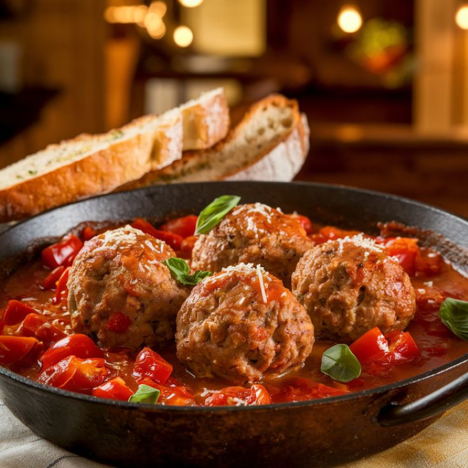
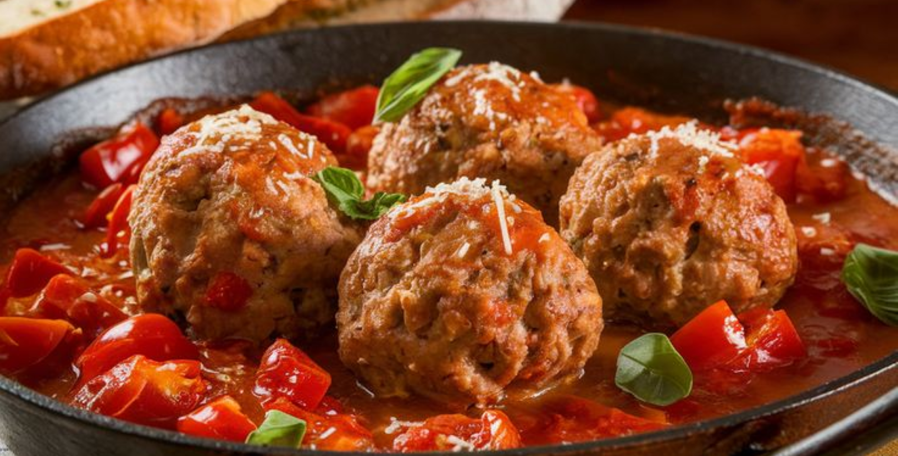

Polpette al sugo:
- 400g di carne mista di maiale e manzo macinata
- 120 grammi di mollica di pane bianco (anche pane in cassetta)
- poco latte per bagnare il pane sale e pepe
- 1 uovo intero
- 70 grammi di Parmigiano Reggiano
- 30 grammi di pecorino Dop grattugiato
- prezzemolo tritato
- pane grattugiato
- olio extravergine di oliva


Procedimento:
- Mettere in una ciotola la carne trita di manzo e maiale, la mollica di pane bagnata in poco latte e leggermente strizzata, l’uovo sbattuto, il prezzemolo tritato finemente, il parmigiano e il pecorino grattugiati, un pizzico di sale e, se vi piace, pepe nero macinato fresco.
- Impastare, senza schiacciare troppo la carne, in modo che gli ingredienti si amalgamino.
- Regolare se necessario di sale e mettere l'impasto in frigorifero, coperto da pellicola per alimenti, per 30 minuti. Potete aggiungere al pomodoro mezzo bicchiere di vino rosso.
- Mentre la passata di pomodoro cuoce, formare con l'impasto delle polpette grandi quanto una pallina da ping pong. Friggere le polpette per pochi secondi in olio extravergine di oliva: devono solo colorire all'esterno e formare una sottile crosticina
- Man mano che friggete le polpette, scolatele bene e aggiungetele al sugo di pomodoro. Una volta che le polpette saranno tutte immerse nel sugo, coprire e cuocere a fuoco bassissimo per 30-40 minuti, finché il sugo non sarà denso e vellutato..
- Unire la passata di pomodoro.
- Aggiungere un po' di sale, qualche foglia di basilico se di stagione
- Cuocere la passata di pomodoro coperta per 10 minuti circa.